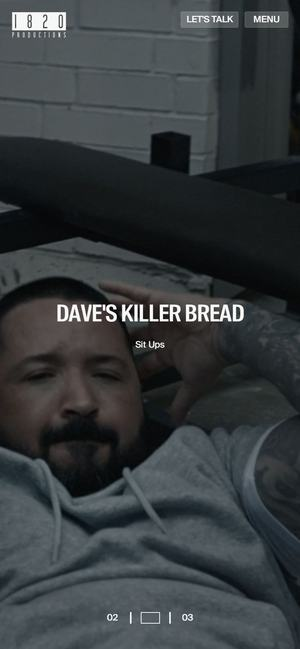

Awwwards 오늘의 사이트 · 2026.02먼저 보세요011820 Productions
와 포인트로딩이 끝나면 그대로 쇼릴이 화면을 채우고, 커서는 ‘PLAY’ 원형 버튼으로 바뀝니다. 촬영 현장(BTS) 사진·영상만 모은 페이지가 따로 있습니다.
프리투플라이라면프리투플라이와 같은 업(지역 기업·기관 홍보영상)이 이렇게까지 고급스러울 수 있다는 증거. 스테이문 야경 → 요트대회 → 피트니스 무대 → 웨딩으로 이어지는 30초 쇼릴이 첫 화면.